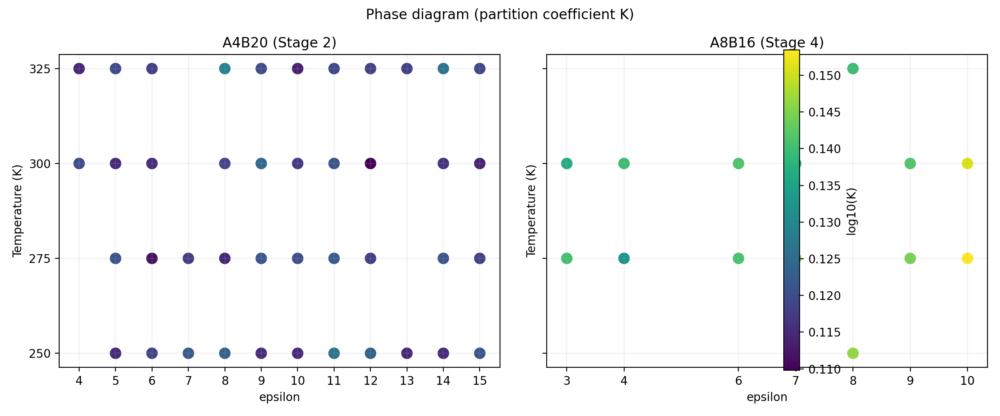
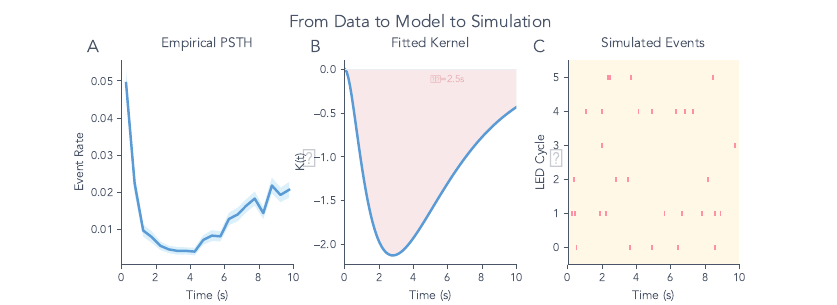
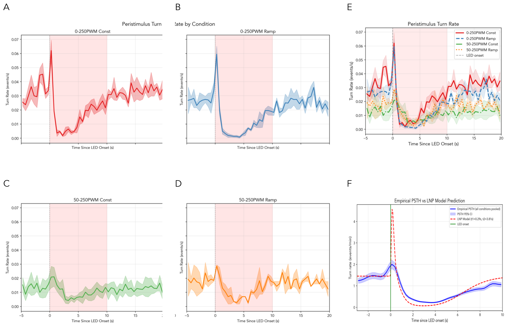

magniphyq
An experimental platform where an entire research pipeline runs as one node graph you can inspect and clone, from raw track data through behavioral analysis to physical simulation, producing validated data ready for the models built on it.
magniphyq is an experimental platform for behavioral and biophysical research, built so that a whole pipeline lives as a node graph of connected modules a researcher can see at once, turning raw capture into validated data ready for the models built on it. A researcher loads data into a node, connects it to analysis and visualization nodes and watches results update as the graph runs, with each module carrying its own provenance. It was built and verified in the Mihovilovic Skanata lab between June 2024 and August 2025.
Open the live workspaceThe analysis layers
Track extraction
The extraction layer turns recorded video into per-animal tracks and keeps identity stable across frames, so that every downstream measure attaches to the correct individual.
Behavioral segmentation
The segmentation layer divides each track into behavioral states such as runs, reorientations and head sweeps, and supports both manual review and unsupervised passes at multiple time scales.
Contour analysis
The contour layer measures body shape over time, which lets posture and bending enter the analysis alongside trajectory, useful for mechanosensation studies where the body itself carries the signal.
Simulations
The workspace connects analysis to simulation, so that a measured model can be run forward and compared against data inside the same graph. Two simulation programs feed it.
Synapsin phase diagram
The synapsin program runs a molecular-dynamics sweep that maps where synapsin condensates form as a function of interaction strength and temperature. The campaign covers 135 conditions with 109 completed runs of 500 chains each, laid out as a coarse grid where each collected cell carries its measured partition coefficient.

indysim
The indysim program is an individual-based simulation of larval navigation that turns a hypothesis about sensory-driven turning into a forward model whose output can be measured the same way real animals are. A peri-stimulus turn-rate readout compares the model against recorded behavior.


Annotation quality control
Visualization nodes display behavioral structure at multi-scale resolution and surface annotation quality, so that a reviewer sees where labels are confident and where they need a second look.
What comes next
The workspace is built and verified, and the next moves carry it toward a shared, browser-native tool.
- A browser-native canvas in the spirit of Miro and TouchDesigner, so the graph is the primary interface.
- Shared workspaces, so collaborators open the same graph and pick up where another left off.
- A Slack path for shipping and sharing a run, so results leave the workspace where the team already talks.
- A Cursor path for building new modules and cloning a pipeline, so the graph extends through agent work.